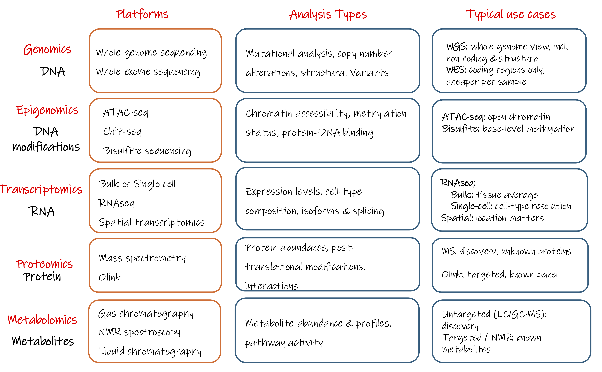
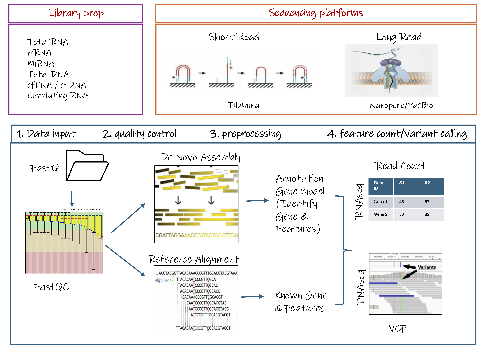
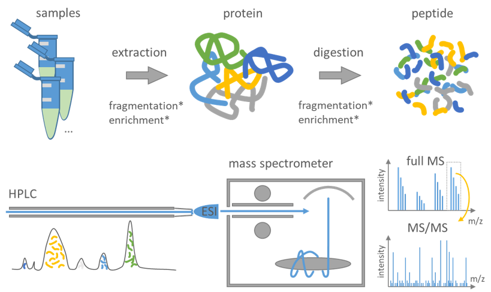

Choosing the Right Platform
The first design decision in Module 2 is which platform to run at all, because that choice fixes everything that follows.
The chain is short and it runs one way only:
research question → biological molecule → measurement platform → data type
Each decision constrains the next. Once samples are collected on a particular platform, you cannot move back up the chain without collecting new data.
Start from the molecule
Different biological molecules require different measurement technologies. DNA and RNA can be sequenced directly, whereas proteins and metabolites generally cannot and are instead measured using approaches such as mass spectrometry or affinity-based assays. The molecule determines the platform, not the other way around.
The figure below maps each biological layer to the molecule it targets, the current platforms available to measure it, examples of analyses each enables, and in the final column when you would choose one platform over another within the same layer.

Read the figure left to right, but note that the rightmost column is where the design decision actually lives. The same pattern recurs down every row: the choice is almost always discovery versus targeted (can the platform see things you didn't specify in advance?) or resolution versus average (does it resolve individual cells or locations, or only their pooled signal?).
The question chooses the layer; the layer chooses the platform
As in Module 1, the research question should decide which layer of biology you measure, not the other way around. A platform adopted because it is current, then pointed at a question it does not fit, is one of the most common and most expensive versions of this pitfall.
Two families of platform
Current omics platforms fall into two broad families, distinguished by how the instrument measures the biological signal.
Sequencing-based platforms determine the nucleotide sequence of DNA or RNA molecules, and typically yield reads, which are processed downstream into the data types you will work with. RNA-seq, single-cell RNA-seq, ATAC-seq, and microbiome sequencing all sit here.
Signal-based platforms measure a physical signal instead fluorescence, or ion abundance and typically yield intensities. Mass spectrometry (proteomics, metabolomics), microarrays, and imaging-based assays sit here.
The two families generate data in different ways. The next two sections walk through each sequencing first, then mass spectrometry, so the kind of number each produces makes sense before you rely on it.
Discovery is a design choice, not a family
Sequencing platforms are often used for discovery, and many signal-based platforms measure predefined targets but the two don't always line up. Untargeted mass spectrometry can also support broad discovery, while targeted sequencing panels interrogate only pre-selected regions. Whether an assay is discovery-driven or targeted is set during study design, not by whether it sequences.
Spatial omics sits across both families
Spatial transcriptomics is a useful test of the framing above, because which family a platform belongs to determines the measurement it produces. Visium captures RNA by sequencing barcoded spots on a tissue section and produces count data. Imaging-based platforms such as Xenium and MERFISH detect fluorescently labelled RNA directly within intact tissue; although fluorescence intensities are measured during acquisition, the pipelines typically decode these into transcript counts per cell. The biology being measured is similar; the measurement process, and therefore the data type, is not.
2.2 Sequencing: from sample to reads
Sequencing takes extracted DNA or RNA, prepares it into a form the instrument can read, and reports the nucleotide sequence of millions of fragments. The output is reads the raw sequences coming off the machine, before any analysis. Everything below is fixed before those reads exist, and the chain runs one way only.

First row stops at raw reads. Everything to the right of that quality control, alignment or assembly, and the count matrix or VCF is downstream analysis. It is shown here only so you can see where the reads go next.
Two upstream decisions do most of the design work: what you capture in library prep, and the read length the platform gives you.
Library prep decides what you capture
Library prep turns extracted nucleic acid into barcoded, sequenceable fragments. What you choose to enrich for at this stage sets the ceiling on what the reads can contain. Sequencing total RNA, mRNA, or small RNA are different libraries answering different questions; a library built for mRNA cannot be made to report small RNAs later. As with platform choice, the question decides the library, not the other way around.
Barcoding at this stage is multiplexing, not pooling: barcoded samples share one sequencing run but stay computationally separable afterwards, unlike biological pooling, which merges samples irreversibly (Module 1, Pitfall 8).
Short-read sequencing vs Long-read sequencing
Short-read sequencing (e.g. Illumina) reads fragments of roughly 50–300 bases. It is cheap, high-throughput, and highly accurate per base, which makes it the default for quantifying known features such as gene expression across many samples. Its limitation is structural: anything longer than a single fragment has to be reconstructed computationally, and some things cannot be reconstructed reliably at all.
Long-read sequencing (e.g. PacBio, Oxford Nanopore) produces single reads spanning thousands of bases. Because a read can cover a whole molecule, long reads resolve full-length isoforms, structural variants, and repetitive regions directly, rather than inferring them. The trade-off is higher cost per base and lower throughput; modern long-read platforms are now fairly accurate per read.
The decision follows from the question, not the budget: if you need to see full-length molecules or structural features, no amount of short-read depth substitutes for read length. If you are quantifying known features cheaply and at scale, short reads are the better fit. This is a read-length limit, not a coverage one, which is why it cannot be fixed after sequencing.
The unrecoverable rule
If the platform cannot capture the biological signal of interest, no analysis method can recover it. The choice has to be made before data collection, not revisited after. This is why platform and read-length choice sit in study design, alongside sample size and randomisation, not in analysis.
2.3 Mass spectrometry: from sample to spectrum
Proteins and metabolites cannot be sequenced there is no equivalent of reading off a nucleotide order. They are measured instead by mass spectrometry. Mass spectrometry measures charged molecules according to their mass-to-charge ratio (m/z) and records their signal intensity. The output is intensities a continuous signal.
The chain runs one way, exactly as it did for sequencing, and it ends at the spectrum:
Proteomics extract → prepare → separate (LC) → ionise → mass spectrometer → spectrum

Source: adapted from csbiology.github.io Mass spectrometry-based proteomics
Reading left to right: proteins are extracted and digested into peptides the defining step, and the one thing that makes this workflow look different from sequencing. The peptides are separated over time by liquid chromatography (LC) so they don't all hit the instrument at once, sprayed into the mass spectrometer as charged ions, and weighed. What comes back is a spectrum: intensity on one axis, m/z on the other.
Metabolomics takes the same path, minus one step
Metabolites are small molecules and are measured directly, there is no digestion step. Everything downstream of extraction is the same: separate, ionise, weigh, read out as intensities.
Two decisions inside this chain do most of the work, and neither is a step you can see in the figure, each is a mode the same step can be run in. Both are fixed before the run, and one of them cannot be undone afterwards.
Decision 1: label-free or labelled
How samples are quantified against each other is chosen at the bench, not in analysis.
Label-free runs each sample separately and compares signal across runs. It is cheap, places no fixed limit on sample number, and is often attractive for larger studies but because samples are measured in different runs, run-to-run variation and a greater potential for missing measurements across runs are important considerations. This is where injection order matters: instrument signal drifts over a run, so if samples are injected in an order that lines up with your biological groups, the drift becomes a batch effect indistinguishable from biology, the same failure you saw in Module 1, Pitfall 4, in a new guise. Randomise injection order, and plan pooled QC injections to track the drift. Pooled QC has to be prepared before the run; if it was never included, no later analysis can reconstruct it (Module 1, Pitfall 6).
Labelled (e.g. TMT) chemically tags several samples so they can be combined and measured in a single run. Run-to-run variation is reduced within a tagged set because the samples are measured together, but the number of samples per set is capped, and each set then becomes its own batch to balance across. Labelling buys within-set consistency at the cost of throughput and a new layer of batch structure to design around.
This is the power/cost trade-off, on the bench
Label-free maximises sample number for the budget; labelled maximises consistency within a set. Neither is correct in the abstract, the right choice follows from whether your study is limited more by sample number or by run-to-run noise.
Decision 2: the acquisition mode you cannot revisit
Once ions are inside the instrument, the acquisition mode determines how they are sampled and which are selected for detailed measurement. This is the mass-spectrometry equivalent of read length: set at acquisition, and unrecoverable afterwards.
DDA (data-dependent acquisition) takes a survey scan and then selects and fragments a subset of precursor ions, typically favouring the most abundant ions it sees. This produces relatively less complex MS/MS spectra but by construction it spends its effort on what is already abundant. Low-abundance peptides may be sampled sporadically or missed entirely, and which ones are selected can shift from run to run.
DIA (data-independent acquisition) fragments ions across predefined m/z windows, rather than selecting individual precursors by abundance. This provides more reproducible sampling across runs, at the cost of more complex, multiplexed spectra.
The unrecoverable rule
The acquisition mode determines how ions are sampled and acquired. A peptide that was never selected for acquisition leaves no fragmentation evidence in that run, not detected is not the same as not present, but no downstream method can recover a signal that was never acquired. This is the same principle Module 1 named for platform choice (Pitfall 2), now at the level of the instrument.
This is also where a fact from Module 1 finally has its mechanism. Missingness in mass spectrometry is often informative, not random: a low-abundance molecule is more likely to fall below the detection threshold, so a missing value can reflect low abundance rather than absence. DDA's tendency to favour abundant ions is one contributor to this pattern. That is why, as Module 1, Pitfall 6 warned, filling a missing value with the sample mean is the wrong instinct: it can turn a potentially low-abundance observation into an average-abundance value and distort exactly the low-abundance molecules a discovery study is trying to find. The design decision here sets the shape of the missingness you will have to reason about later.